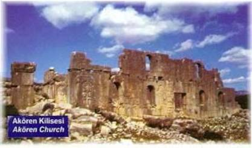
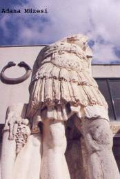
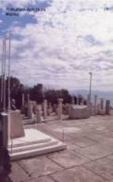

Haberler
Spor
 Galatasaray Başkanı Dursun Özbek'ten sürpriz bir hamle geldi. Kulüpler Birliği'nin başkanlığına soyunan Özbek, kulüpler arası atışmaları doğru bulmadığını ve bu konunun daha uygun şekillerde çözümlenmesi gerektiğini masaya yatırdı.
Galatasaray Başkanı Dursun Özbek'ten sürpriz bir hamle geldi. Kulüpler Birliği'nin başkanlığına soyunan Özbek, kulüpler arası atışmaları doğru bulmadığını ve bu konunun daha uygun şekillerde çözümlenmesi gerektiğini masaya yatırdı.
Gündem
Adana'da PKK/ KCK terör örgütü adına eylem yapıp, güvenlik güçlerine molotof kokteyli atan 5 kişi tutuklandı. Terörle Mücadele Şubesi ekipleri, 9 Ocak'ta merkez Yüreğir İlçesi'nin Anadolu, Dede Korkut ve 19 Mayıs Mahallesi ile ara sokaklarında toplanıp, korsan gösteri düzenleyen PKK/KCK yandaşlarına müdahale etti.
Son Dakika
Sultanahmet Meydanı'nda saat 10.20'de çok şiddetli bir patlama meydana geldi. Olay yerine ambulans, polis ve itfaiye araçları sevk edildi. Bölgede olağanüstü güvenlik önlemleri alındı, tramvay seferleri durdu.
ZENGİN TURİZM DEĞERLERİYLE ADANA
Adana ve yöresi doğal güzellikleri ve çeşitli uygarlıkların yaşandığı bir bölge olması nedeniyle önemlidir. Bu bakımdan her tür turizme uygun bir yerdir. Çok sayıda kale, köprü, cami, kilise, ören yeri, han, hamam, müzesi ile tarih ve kültür turizmi için, bir çok kilise ve cami ile de inanç turizmi için bir çekim merkezidir. Toroslardaki yüksek alanlar doğa yürüyüşü trakking, akarsulardaki patinaj, av turizmi, yayla turizmi, mağra ve kanyon turizmi için dünyada az rastlanan güzelliklerle doludur. İlde ziyaret edenleri ağırlamak için beş yıldızlı, üçü dört yıldızlı, biri üç yıldızlı, altısı iki yıdızlı, biri bir yıldızlı, bir adet de motel olmak üzere 14 adet Turizm Bakanlığından belgeli, 975 yatak kapasiteli otel, yedi adet ikinci sınıf restoran, iki adet eğlence yeri bulunmaktadır. 30 adet seyahat acentası faaliyet göstermektedir. Adana için önemli bir konaklama yeri olarak HiltonSa'nın temeli 5 Ocak 1998 tarihinde atılmış olup, iki yılda bitirilmesi planlanmıştır. 38 bin m2 alan üzerine inşaa edilmektedir. 310 oda, konferans salonu, toplantı salonu ve diğer sosyal tesislerin yer aldığı proje içinde daha sonra TURSA Ticaret Merkezi inşaa edilecektir.
Turizm Potansiyeli
Arkeoloji Tarih ve Kültür Turizmi
Arkeolojik sit bölgeleri, tarihi kalıntılar ile kültürel ve etnoğrafik değerler; Adana ilinin en önemli turizm kaynaklarındandır. İlde kültür amaçlı gezilerin önemli bir kısmı Karatepe'ye yapılmaktadır. Plan döneminde de bu ilgi ve isteğin süreceği sanılmaktadır. Karatepe konumu itibariyle, arkeolojik değerlerinin yanısıra doğal güzellikleri de içermektedir. Yumurtalık Açık Hava Müzesi - Sit Bölgesi Aslantaş baraj gölü, çam ormanları ile kaplı bu alan; 7.715 hektar büyüklüğündeki Karatepe-Aslantaş Milli Parkını oluşturmaktadır. Baraj gölünün yarattığı peyzaj, anılan orman varlığı nedeni ile Ege-Akdeniz kıyılarında görülen manzaralarla eşdeğerdir. Bu özellikleri ile Karatepe, doğa ve kültür değerleri karışımını sergileyen bir açık hava müzesidir.
Çevre Bilimsel (Ekoloji Turizmi)
Akyatan Gölü 160 km uzunluğundaki kıyı şeridinin 45 km'si kumul, sulak, sazlık ve benzeri gibi doğal alanlardır. Bu alanların en önemlisi Seyhan nehrinin meydana getirdiği Tuzla ve Akyatan gölleriyle, Ceyhan nehrinin oluşturduğu Akyayan gölü ve Yumurtalık dalyanıdır. Her iki alanda önemli çevre bilimsel(ekolojik) zenginliğe sahiptir. Doğal ortamlarında az bulunan çeşitli kuşlar ile deniz ve kara canlıları yaşamaktadır.